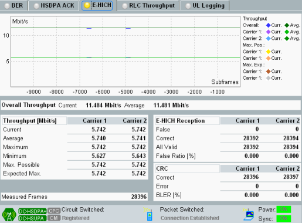

The tab shows the measurement results and the connection status.
The connection status information displayed at the bottom is the same as in the WCDMA signaling main view, see "Connection Status".
The most important settings of the WCDMA signaling application can be accessed via the "Signaling Parameter" softkey and the related hotkeys.
To switch to the signaling application, press the "WCDMA-UE Signaling" softkey two times.
The "Config" hotkey opens either the configuration dialog of the measurement or the configuration dialog of the signaling application, depending on which softkey is active.

For a description of the results, see "Measurement Results".
Remote command:To change the appearance and content of the view, press the "Display" softkey. The following hotkeys are then available at the bottom of the GUI:
Hotkey | Description |
|---|---|
"Select Trace ..." | Select the trace types to be displayed in the view. |
"Y Scale ..." | Modify the ranges of the Y-axis, where both manual scaling and automatic scaling are possible. Manual scaling allows you to enter a range, to display the full range or to display the default range. |
"X Scale ..." | Modify the ranges of the X-axis. Manual scaling allows you to enter a range, to display the full range or to display measured subframes. |